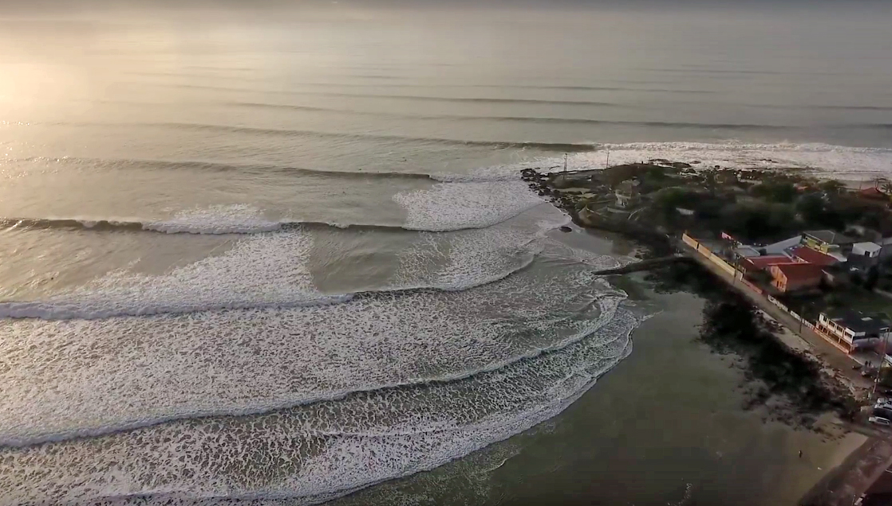
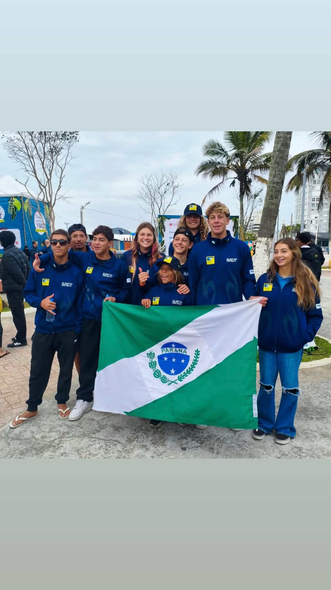

O berço do surfe paranaense
Onda que quebra pra direita, gente que nasceu de pé na prancha e uma cidade que virou sinônimo de surfe no Sul do Brasil.
O documentário
Das primeiras ondas aos grandes nomes do esporte, conheça as histórias que ajudaram a transformar Matinhos em um dos principais destinos do surfe no Paraná.
Assista ao documentário completo
O Pico de Matinhos
O Pico de Matinhos é um dos principais símbolos do surfe no litoral paranaense. Entre ondas, competições e gerações de surfistas, esse lugar faz parte da identidade da cidade.
Um dos cenários mais marcantes do surfe paranaense.

Nas ondas do Pico

Gerações de surfistas
Pico de Matinhos · Praia Central
Primeiras gerações
Surfistas que ajudaram a construir a identidade do surfe em Matinhos e fizeram do Pico um dos principais pontos do esporte no Paraná.
Novos talentos
Novos talentos que continuam a tradição do surfe em Matinhos, levando o nome da cidade para novas competições e mantendo viva a cultura do Pico.
Sobre o projeto
Este projeto busca registrar e apresentar a história do surfe em Matinhos, valorizando os atletas, os espaços e as gerações que ajudaram a construir a identidade do esporte na cidade.
A proposta
O surfe faz parte da identidade cultural de Matinhos. Ao longo das décadas, diferentes gerações de surfistas ajudaram a transformar o município em uma referência do esporte no litoral do Paraná.
A proposta deste projeto é reunir parte dessa história em um espaço digital, apresentando personagens, lugares e momentos importantes para compreender a relação entre Matinhos e o surfe.
Mais do que contar sobre o esporte, o projeto busca valorizar a memória local e mostrar como diferentes gerações contribuíram para construir esse legado.
Um projeto sobre identidade
Do surgimento dos primeiros surfistas aos novos talentos, esta pesquisa procura mostrar como o surfe se tornou parte da história e da cultura de Matinhos.
01
Projeto
PR
Litoral
Documento do projeto
Consulte abaixo o documento completo utilizado como base para este trabalho.